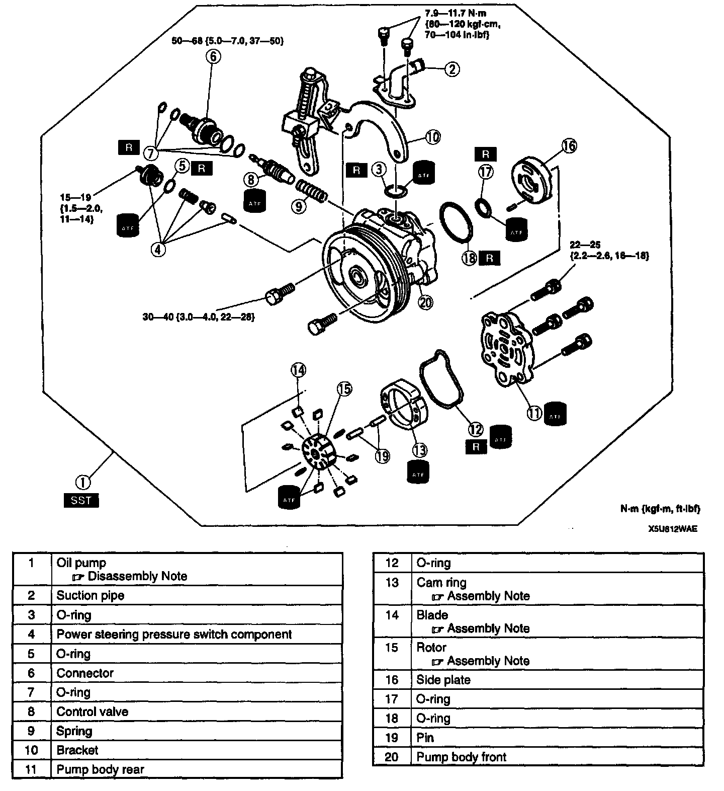
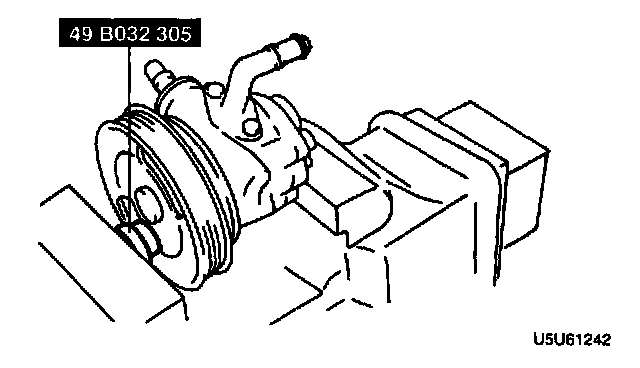
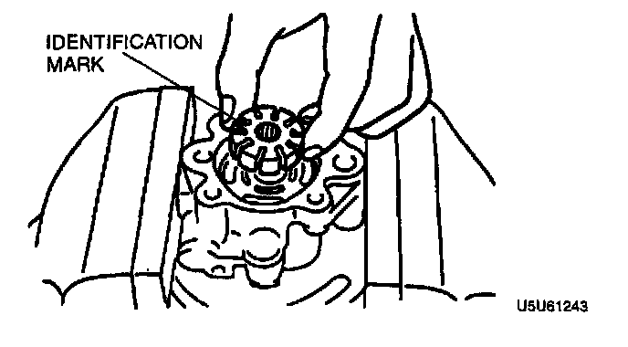
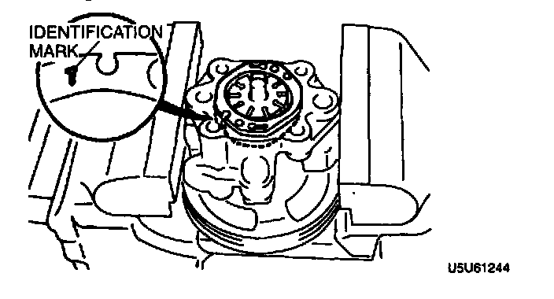
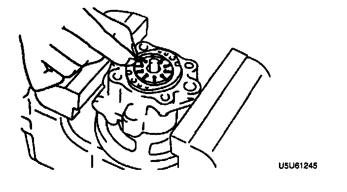

Disassembly and Assembly
POWER STEERING OIL PUMP DISASSEMBLY/ASSEMBLY
1. The following procedure is for replacement of the O-rings only. Replace the pump component if other repairs are necessary.
2. Disassemble in the order indicated in the table.
3. Assemble in the reverse order of disassembly.
Power Steering Oil Pump Disassembly Note

- Use the SST when securing the oil pump in a vise, so that force is not applied to the pulley or shaft.
Rotor Assembly Note

- Install the rotor with the identification mark facing upward.
Cam Ring Assembly Note

- Install the cam ring with the identification mark facing downward.
Blade Assembly Note

- Install the blades into the rotor with the rounded edges facing outward.